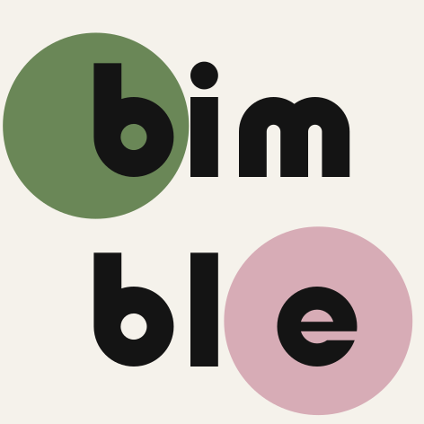
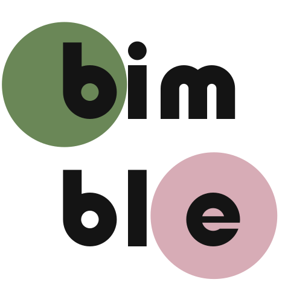
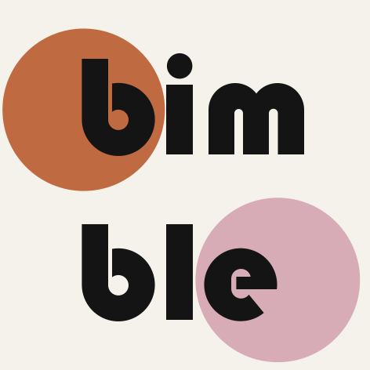
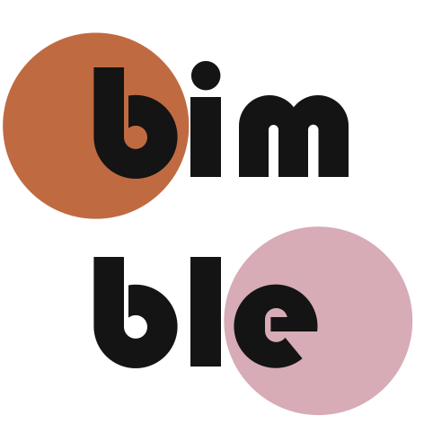
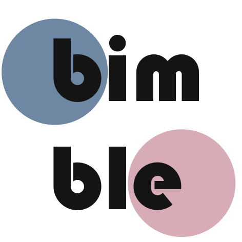
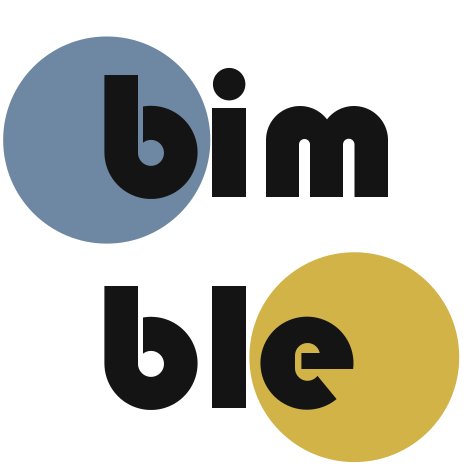

Two discs
bimble design system
The look of Bimble, the open-source IFC/BIM app: five colours with one job each, three fonts and the wordmark, the logo, and 6 component cards. Generated from guilbep/bimble-design-skill; do not edit by hand.
Download for Claude Desktop Source on GitHub Then in Claude: Customize › Skills › + › Create skill › Upload a skill.
Colour: one job each
Text on every fill is ink. A colour used as text uses its -text shade.
#C06A41clay-text
#A35A37#D7ACB6pink-text
#80676D#6A8757moss-text
#5B744A#D2B347ochre-text
#7D6B2A#6E88A3slate-text
#5A6F85Neutrals
#F5F2EBPage and panel ground. From the dark wordmark.
#FFFFFFCards, paper, the model viewport.
#EDE7DBDividers inside cards, hover on cream, side faces in drawings.
#141414Text and logo letters. 16.5:1 on cream, 18.4:1 on sheet.
#5C574DStone. Secondary text, labels. 6.4:1 on cream, 7.2:1 on sheet.
#DDD6C8Decorative borders only (1.3:1 on cream). Never the only edge of a control.
Fonts: which one where
Two Bimble fonts come from the logo's geometry. Bimble Wordmark holds only the letters of the name and stays under 2 KB. Bimble is the full typeface: every printable ASCII character. The three open fonts do all the rest.
Bimble, every character
Type
Bimble Wordmark for the word bimble only, Sora for display and headings, Source Sans 3 for everything you read, DM Mono for data.
display · 52px / 700
title · 38px / 700
heading · 20px / 700
panel · 14px / 500
lead · 18px / 400
body · 16px / 400
ui · 14px / 400
small · 13px / 400
data · 13px / 400
eyebrow · 12px / 400
wordmark · 52px / 400
Space and shape
Round where you touch, square for drawings. 4px base. Derived from the brand board's gaps; not yet tested in the app.
space-1 · 4pxspace-2 · 8pxspace-3 · 12pxspace-4 · 16pxspace-5 · 24pxspace-6 · 32pxspace-7 · 40pxspace-8 · 56pxradius-noneDrawings, sheets, the viewport, tables.
radius-smInputs, menus.
radius-mdCards and panels.
radius-pillButtons, chips, tabs.
radius-discSwatches, status dots, axis bubbles, avatars.
target · 32px: Minimum hit target in the desktop app. 44px on touch and the web page.dot · 12px: Status dot, always with an ink outline.icon · 20px: Stroke icons, 1.5px, ink, on a 24px grid.
Logo
Never recolour, outline, rotate or add effects. Letters are always ink. Studies 3 and 4 are for reference only.

bimble-icon-lab.svg
bimble-icon.svg

bimble-mark-lab-on-cream.svg

bimble-mark-lab.svg

bimble-mark-on-cream.svg

bimble-mark.svg

study-3-slate-pink.svg

study-4-slate-ochre.svg